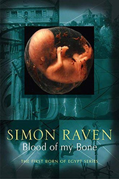
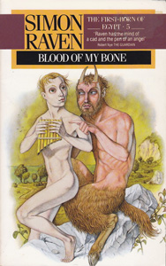
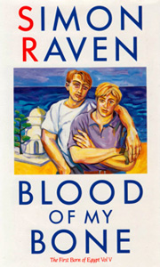

Fellow of Lancaster College; twin sister to Theodosia (now Lady Canteloupe).
Ivan ('Greco') Barraclough
Fellow of Lancaster College; an anthropologist who specialises in the inhabitants of the Peloponnese.
Young Sicilian, recent graduate of Lancaster College, and recently appointed to a Fellowship of the College by Provost Llewyllyn.
Greek youth, 'Greco' Barraclough's protégé.
Provost of Lancaster College, Cambridge, father of the previous Lady ('Baby') Canteloupe, brother-in-law of Isobel Stern being married to her sister Patricia.
Private Secretary to Provost Llewyllyn.
Son of Isobel Stern, nephew to Provost Llewyllyn.
A schoolboy who has recently left school but still under Conyngham's charge.
95-year old Senior Fellow of Lancaster College, a vegetarian and gentleman of "utmost integrity and distinction".
Niece of the late Miss Mona Corrington (q.v. Places Where They Sing), Fellow of Lancaster College, elected on the strength of her research into the breeding habits of the Egyptian Moose-Beetle. Peer, social scientist and Fellow of Lancaster College. Previously liked to be put to sleep by Mona Corrington (q.v. Places Where They Sing).
Fellow of Lancaster College, a dilatory Latinist (his edition of Cicero's works is over a decade overdue).
Sir Jacquiz Helmutt's wife.
'Niece' of Maisie Malcolm, proprietress of Buttock's Hotel.
Daughter of Isobel and (the late) Gregory Stern, friend of Tessa Malcolm.
'Squire of Luffham by Whereham. Younger son of Peter Morrison. Currently following in the footsteps of Odysseus off the Greek Islands, following his conviction for indecency in Australia.
A novelist, accompanying Jeremy Morrison on his travels.
Managing Director of Salinger, Stern & Detterling (previously Salinger & Holbrook). Friend and employee of Donald Salinger in The Rich Pay Late. Captain the Most Honorable Marquess Cantelope of the Aestuary of the Severn. Desperately seeking an heir to inherit his title.
Theodosia ('Thea') Canteloupe
The new Marchioness Cantaloupe, now carrying a female heir, sired by Marius Stern.
Father of Jeremy Morrison.
Proprietress (with Fielding Gray) of Buttock's Hotel.
Mother of Rosie Stern, currently living in France with Jo-Jo Guiscard.
Josephine ('Jo-Jo') Guiscard
Wife of antiquarian Jean-Marie Guiscard.
Old soldier under Fielding Gray's command, now living in Corfu. Previously appeared in The Sabre Squadron. Sociologist at Lancaster College, arrested by the Police for drugs offences.
Private cook to Piero Caspar.
Daughter of Ivan and Betty Blessington, friend of Rosie Stern.
Her sister, who has affectedly changed her name from Caroline.
A stable lass who previously introduced Marius Stern to the 'pleasures of the flesh' in Before the Cock Crow. Secretary to Marquess Canteloupe, a 'Jermyn Street' man.
Actor who plays the Voice of Virgil causing Jeremy Morrison's transformation.



The death of the Provost of Lancaster College is a catalyst for a series of disgraceful goings-on in the continuing saga of the Canteloupes and their circle.
Marius, under age father of the new Lady Canteloupe's dutifully-produced heir to the family estate, is warned against the malign influence of Raisley Conyngham, Classics teacher at his school. Conyngham is well aware of the sway he has over Marius, who has already revealed himself a keen student of the "refinements of hell". With fate intervening, the stage is set for another deliciously wicked installment.